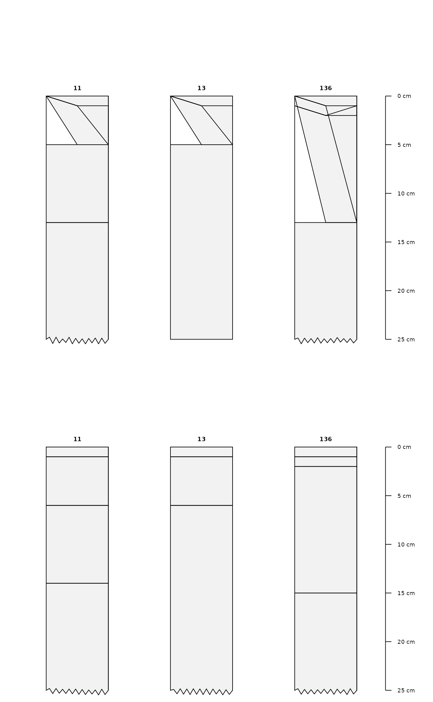
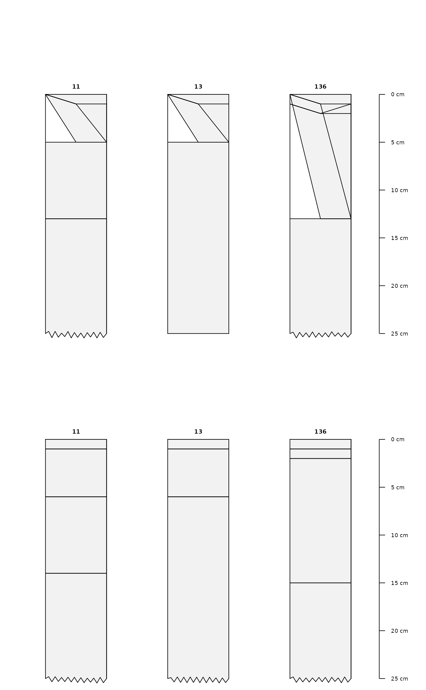

Accumulate horizon depths, and reflect reversed depths, relative to new datum
Source:R/accumulateDepths.R
accumulateDepths.RdFix old-style organic horizon depths or depths with a non-standard datum by the "depth accumulation" method.
Usage
accumulateDepths(
x,
id = NULL,
hzdepths = NULL,
hzname = NULL,
hzdatum = 0,
seqnum = NULL,
pattern = "O",
fix = TRUE
)Arguments
- x
A
data.frameorSoilProfileCollection- id
unique profile ID. Default:
NULL, ifxis a SoilProfileCollectionidname(x)- hzdepths
character vector containing horizon top and bottom depth column names. Default:
NULL, ifxis a SoilProfileCollectionhorizonDepths(x)- hzname
character vector containing horizon designation or other label column names. Default:
NULL, ifxis a SoilProfileCollectionhzdesgnname(x)- hzdatum
a numeric vector to add to accumulated depths. Default:
0. Can be equal in length to number of profiles ifxis aSoilProfileCollectionor number of (unique) IDs ifxis adata.frame.- seqnum
Optional: character vector containing record "sequence number" column name; used in-lieu of
hzname(whenNA) to identify "first" record in a profile- pattern
pattern to search for in
hznameto identify matching horizons to append the profile to- fix
apply adjustments to missing (
NA) depths and expand 0-thickness horizons? Default:TRUE
Value
A horizon-level data.frame, suitable for promoting to SPC with depths<-, or a SoilProfileCollection, depending on the class of x.
Details
The "depth accumulation" method calculates thicknesses of individual horizons and then cumulative sums them after putting them in id + top depth order. The routine tries to determine context based on hzname and pattern. The main transformation is if a top depth is deeper than the bottom depth, the depths are reflected on the Z-axis (made negative). The data are then id + top depth sorted again, the thickness calculated and accumulated to replace the old depths.
This function uses several heuristics to adjust data before transformation and thickness calculation:
Regex matching of horizon designation patterns and similar
matches of
patternwhere both top and bottom depthNA->[0,1][top,bottom]depthREMOVE horizons that do not match
patternwhere both top and bottom depthsNA
Examples
# example using hzdatum argument
data(sp4)
depths(sp4) <- id ~ top + bottom
hz <- accumulateDepths(sp4,
id = "id",
hzdepths = c("top", "bottom"),
hzname = "name",
hzdatum = 5 * 1:length(sp4))
plot(hz)
 # example using old-style O horizons
hz <- read.table(text = "peiidref hzdept hzdepb hzname seqnum phiid
1 11 0 5 A 2 295
2 11 1 0 Oe 1 294
3 11 5 13 C1 3 296
4 11 13 58 C2 4 297
5 11 58 152 C3 5 298
6 13 0 5 A 2 303
7 13 1 0 Oe 1 302
8 13 5 25 Bw 3 304
9 13 25 61 C 4 305
10 13 61 NA R 5 306
11 136 0 13 A1 3 695
12 136 1 0 Oe 2 694
13 136 2 1 Oi 1 693
14 136 13 61 C1 4 696
15 136 61 76 C2 5 697")
depths(hz) <- peiidref ~ hzdept + hzdepb
#> converting profile IDs from integer to character
#> Warning: Horizon bottom depths contain NA! Check depth logic with aqp::checkHzDepthLogic()
#> Warning: One or more horizon bottom depths are shallower than top depth. Check depth logic with aqp::checkHzDepthLogic()
hz_fixed <- accumulateDepths(hz,
id = "peiidref",
hzdepths = c("hzdept", "hzdepb"),
hzname = "hzname")
is_valid <- checkHzDepthLogic(hz_fixed)$valid
test0 <- subset(hz_fixed, !is_valid)
test1 <- subset(hz_fixed, is_valid)
origO <- subset(hz, grepl("O", hzname))
fixedO <- subset(hz_fixed, grepl("O", hzname))
par(mfrow = c(2, 1), mar = c(0, 0, 3, 2))
plotSPC(origO, max.depth = 25)
plotSPC(fixedO, max.depth = 25)

# example using old-style O horizons
hz <- read.table(text = "peiidref hzdept hzdepb hzname seqnum phiid
1 11 0 5 A 2 295
2 11 1 0 Oe 1 294
3 11 5 13 C1 3 296
4 11 13 58 C2 4 297
5 11 58 152 C3 5 298
6 13 0 5 A 2 303
7 13 1 0 Oe 1 302
8 13 5 25 Bw 3 304
9 13 25 61 C 4 305
10 13 61 NA R 5 306
11 136 0 13 A1 3 695
12 136 1 0 Oe 2 694
13 136 2 1 Oi 1 693
14 136 13 61 C1 4 696
15 136 61 76 C2 5 697")
depths(hz) <- peiidref ~ hzdept + hzdepb
#> converting profile IDs from integer to character
#> Warning: Horizon bottom depths contain NA! Check depth logic with aqp::checkHzDepthLogic()
#> Warning: One or more horizon bottom depths are shallower than top depth. Check depth logic with aqp::checkHzDepthLogic()
hz_fixed <- accumulateDepths(hz,
id = "peiidref",
hzdepths = c("hzdept", "hzdepb"),
hzname = "hzname")
is_valid <- checkHzDepthLogic(hz_fixed)$valid
test0 <- subset(hz_fixed, !is_valid)
test1 <- subset(hz_fixed, is_valid)
origO <- subset(hz, grepl("O", hzname))
fixedO <- subset(hz_fixed, grepl("O", hzname))
par(mfrow = c(2, 1), mar = c(0, 0, 3, 2))
plotSPC(origO, max.depth = 25)
plotSPC(fixedO, max.depth = 25)
